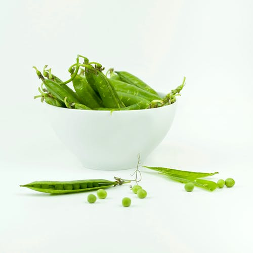

😺 😺 😺 😺 😺 😺 🐶 🐶 🐶 🐶 🐶 🐶 🐸 🐸 🐸 🐸 🐸 🐸
- One of the healthiest vegetables
- 56% of daily Vit A and 100% of Vit K
- Has high antioxidant content too !!
Click here for even more information

- High in vitamin A
- Contain beta-carotene (an anti-oxidant)
- Also high in vitamin C, vitamin K and potassium
Click here for even more information
- Loaded with nutrients, such as vitamin C and vitamin K
- Contains sulforaphane and may have anti-cancer properties
- Also has folate, manganese and potassium!
Click here for even more information
- Contains plenty of allicin
- May help regulate blood sugar levels
- Possible anti-cancer properties
Click here for even more information
- Nutrient dence, and full of vitamins K, A, and C
- Contains kaempferol, folate and manganese
- Consumption may enhance detoxification
Click here for even more information
- Plenty of Vitamin B and Calcium
- 100% daily intake of Vit A, C and K
- High levels of antioxidants!
Click here for even more information

- Plenty of fiber and protein
- High in Vitamin A, C and K
- Also contains riboflavin and folate
Click here for even more information
- Low in calories but high in minerals
- Contains fiber, protein and vitamin A, C and K
- Potential to reduce damage caused by diabetes mellitus
Click here for even more information
- Potent anti-inflammatory properties
- Potential to reduce blood sugar levels
- Natural remedy for motion sickness and nausea!
Click here for even more information
- Rich in vitamins and minerals
- 1/2 a cup provides a third of daily folate needs
- Also pleny of selenium, thiamin and riboflavin
Click here for even more information